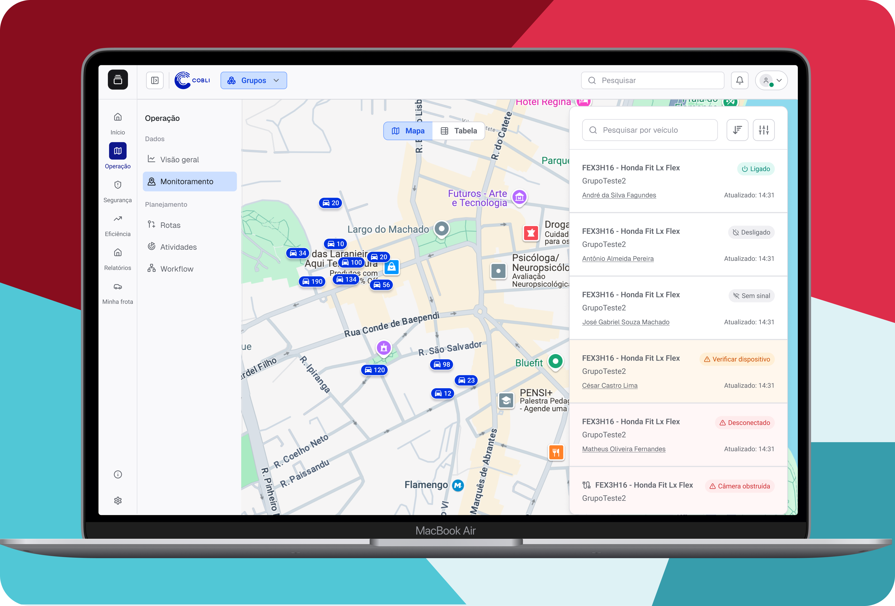
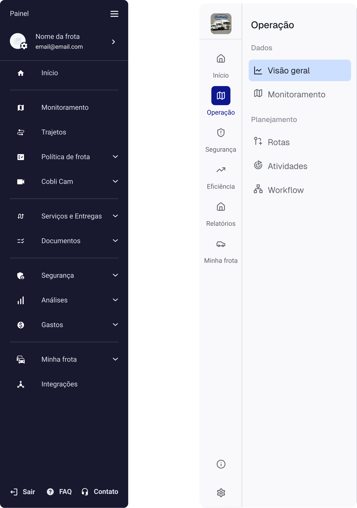

Redesign da navegação: da lógica do produto à lógica do cliente

A empresa
Neste projeto atuei como PM em uma plataforma B2B de telemetria veicular: hardware instalado nos veículos e um painel de software que juntos dão ao gestor de frota visibilidade sobre localização, comportamento de direção, manutenção e operação. O contrato é recorrente, vendido para frotas de portes bem diferentes, de pequenas transportadoras a operações enterprise com milhares de veículos.
Depois da venda, o cliente passa por duas etapas antes de começar a extrair valor de fato: a instalação física dos dispositivos, e a configuração do painel (motoristas, alertas, geocercas, grupos). Só depois disso os dados viram gestão real da frota. Essa etapa inicial é o que a empresa chama de ativação.
Contexto
Fui o Product Designer de uma célula temporária chamada Unified XP, criada para resolver problemas de experiência que atravessavam diferentes times de produto. O time era enxuto. Eu liderava as decisões de produto e design, em parceria com um desenvolvedor staff responsável por implementar as mudanças na navegação.
O trabalho começou a partir de uma descoberta importante. Clientes que utilizavam poucas jornadas do produto tinham uma chance maior de churn após o fim do contrato. Meu desafio era entender o que impedia essa adoção e como a experiência do produto poderia ajudar a mudar esse cenário.
Problema
Comecei analisando churn por funcionalidade e a queda de engajamento ao longo do tempo. Os dados mostravam vários sintomas, mas nenhum deles explicava o problema.
A resposta apareceu quando deixei de olhar para funcionalidades isoladas e passei a analisar quantas jornadas cada cliente realmente utilizava. As frotas que usavam menos de 1,5 jornada tinham NRR (Net Revenue Retention) de -31%. Já aquelas que utilizavam mais de 3,6 jornadas chegavam a um NRR de +12%. O NPS seguia a mesma tendência: a nota era 75 entre clientes com uso amplo e 50 entre aqueles que utilizavam poucas jornadas.
Foi a partir daí que comecei a investigar o que limitava essa adoção. Percebi que a navegação estava organizada por funcionalidades e deixavam em evidência as divisões internas do time de produto, e não focavam nas jornadas e necessidades dos clientes.
Além disso, quase toda a retenção do produto era centralizada ao redor da página de monitoramento (mapa em tempo real). Isso deixava a experiência vulnerável: se o GPS ou o sinal falhassem, o cliente dificilmente encontraria valor em outras partes da plataforma. Em clientes Enterprise, esse risco era ainda maior, porque eles precisavam perceber benefícios também em segurança, compliance e redução de custos para justificar contratos maiores.
Outro dado chamou minha atenção. Jornadas naturalmente relacionadas, como segurança e vigilância, quase não eram utilizadas em conjunto. Ficou claro que os clientes não faziam essa conexão sozinhos. Se quiséssemos aumentar a adoção entre jornadas, essa relação precisaria ficar evidente na própria experiência do produto.
Processo
Para entender quem de fato usa cada jornada, conduzi sessões de pesquisa com clientes de portes diferentes até fechar oito perfis, organizados em quatro camadas de autonomia:
- Diretoria, no topo, decide sobre contratos e continuidade de serviços a partir de dados consolidados, sem tempo para investigar detalhe.
- Gestão estratégica, que traduz metas do negócio em KPIs de custo, manutenção e segurança da frota.
- Implementadores-chave, que transformam essas metas em regras e processos do dia a dia.
- Usuários operacionais, que interagem com o produto várias vezes ao dia em tarefas pontuais.
Cada camada consome dado de um jeito diferente — do dado macro e histórico da diretoria ao dado micro e em tempo real de quem executa a operação — e isso virou um critério direto de profundidade de navegação: quanto mais operacional a persona, mais raso e imediato o caminho até a informação precisa ser.
Diretor executivo
Autonomia altaDecide sobre contratação e continuidade de serviços a partir da eficiência da frota e dos resultados consolidados pelos gestores.
JTBDQuando avalia a operação, quer dados consolidados e confiáveis, para decidir sem precisar validar cada número.
Diretor de operação
Autonomia média/altaAlinha processos operacionais aos objetivos estratégicos da empresa, monitorando KPIs, liderando equipes e garantindo conformidade com políticas e regulamentações.
JTBDQuando planeja fluxos de trabalho, quer alinhá-los aos objetivos estratégicos, para manter alta eficiência e produtividade.
Diretor de frotas
Autonomia média/altaAlinha a gestão da frota aos objetivos da empresa, definindo metas e KPIs de custo, manutenção e segurança.
JTBDQuando monitora o desempenho da frota, quer acompanhar KPIs de consumo, manutenção e segurança, para identificar oportunidades de otimização.
Gestor de operação
Autonomia média/altaSupervisiona analistas e condutores, garantindo que serviços e entregas aconteçam com qualidade, e corrige gargalos que travam a produtividade da operação.
JTBDQuando percebe baixa produtividade, quer identificar gargalos como rotas ineficientes ou veículos ociosos, para agir com melhorias eficazes.
Gestor de segurança
Autonomia média/altaImplementa e monitora regras de segurança da frota, promovendo treinamentos e gerenciando bonificações e punições.
JTBDQuando identifica comportamentos de risco, quer aplicar medidas corretivas e treinamentos, para aumentar a segurança da condução.
Executor — operação
Autonomia baixaFaz a ponte entre motoristas e administração, organizando tarefas diárias e ajustando rotas conforme o imprevisto do dia.
JTBDQuando surge um imprevisto, quer ajustar rotas e tarefas em tempo real, para manter os motoristas produtivos.
Executor — segurança
Autonomia baixaVerifica e analisa eventos de segurança individualmente, descarta o que não é relevante e escreve perfis de motoristas e relatórios de ocorrência.
JTBDQuando recebe eventos de segurança, quer avaliar cada um individualmente, para manter só o que é relevante e agir com precisão.
Técnico de manutenção
Autonomia baixaPrioriza reparos, gerencia a equipe de mecânicos e libera ou bloqueia veículos conforme a condição de uso.
JTBDQuando recebe uma demanda de manutenção, quer priorizar o reparo certo, para manter o veículo seguro e operacional.
Em paralelo, mapeei a experiência atual cruzando as tarefas de cada persona com as páginas do produto que hoje resolviam essas tarefas, jornada por jornada — operações, manutenção, segurança, custos e compliance. O mapeamento confirmou o problema na prática: a mesma tarefa dependia de páginas espalhadas em partes diferentes do produto, todas no mesmo nível de navegação, sem hierarquia ou agrupamento que guiasse o cliente até elas.
Antes de propor qualquer solução, validei esses achados com CS, Tecnologia, Vendas e Atendimento. Conduzi sessões de critique para entender como cada área enxergava o problema e quais mudanças realmente fariam diferença.
Cada time contribuiu com uma perspectiva diferente.
- CS mostrou onde os clientes perdiam contexto durante o uso e acabavam recorrendo ao suporte.
- Vendas evidenciou que o discurso comercial já era organizado por jornadas, como segurança e redução de custos, enquanto o produto continuava organizado por funcionalidades.
- Atendimento trouxe o volume de chamados gerados apenas porque os usuários não conseguiam encontrar funcionalidades que já existiam.
- Tecnologia ajudou a definir quais mudanças poderiam ser implementadas sem comprometer a arquitetura existente.
Com esses aprendizados, desenhei uma nova arquitetura de navegação baseada na forma como os clientes pensavam sobre a operação, e não na estrutura interna do produto.
A nova navegação passou a ter:
- Jornadas de entrada centralizadas com gráficos de visão geral.
- Jornadas organizadas por contexto de uso, como Operação, Segurança, Eficiência, Compliance e Configurações.
- Hierarquia de até três níveis, permitindo navegar do panorama geral até relatórios e configurações específicas.
- Conexões entre jornadas que faziam sentido para o cliente, incentivando a descoberta de funcionalidades relacionadas e ampliando a adoção do produto.
Solução
A solução não era apenas reorganizar a navegação, mas mudar a forma como os clientes exploravam o produto.
Na versão anterior, o menu refletia a estrutura interna da empresa. As funcionalidades eram apresentadas como uma lista de produtos e recursos independentes, exigindo que o cliente soubesse antecipadamente onde encontrar cada informação.
No redesenho a arquitetura da informação passou a refletir a forma como os clientes pensam sobre a gestão da frota, e não como os times de produto estavam organizados.
Cada jornada passou a ter um ponto de entrada próprio, começando por uma visão geral e reunindo, em um mesmo contexto, as funcionalidades relacionadas àquele objetivo. A navegação também ganhou uma estrutura hierárquica de até três níveis, permitindo que o cliente partisse de uma visão consolidada e aprofundasse a análise apenas quando necessário.
Essa mudança foi guiada por quatro princípios:
- Organizar o produto por jornadas, substituindo uma navegação centrada em funcionalidades.
- Começar sempre pelo contexto, oferecendo uma visão geral antes de levar o cliente para telas específicas.
- Agrupar funcionalidades relacionadas, facilitando a descoberta de recursos complementares.
- Criar conexões entre jornadas, incentivando a exploração do produto e aumentando a adoção entre diferentes áreas.
Na prática, isso significou deixar de perguntar "qual funcionalidade você procura?" para passar a responder "qual problema você está tentando resolver?".

Teste A/B pré-lançamento
Em vez de migrar toda a base de uma só vez, defini uma estratégia de rollout gradual usando feature flag. O objetivo era validar a nova navegação em um ambiente real, entender como os clientes reagiam às mudanças e evoluir a experiência antes da migração definitiva.
Durante esse período, 31% dos usuários ativos experimentaram a nova navegação e 25% passaram a utilizá-la de forma recorrente. Além disso, 51% das frotas ativas acessaram a nova versão do painel pelo menos uma vez. Para complementar os dados de uso, apliquei dois questionários: um com 256 respostas de clientes que voltaram para a versão anterior e outro com 159 respostas de quem continuou usando a nova. A percepção geral foi positiva, com uma nota de usabilidade entre 5 e 6 em uma escala de 7, mas os comentários também deixaram claro onde a experiência ainda precisava evoluir.
Transformei cada feedback recorrente em uma melhoria antes da migração oficial. Reposicionei a entrada da área Minha Frota, que muitos clientes tinham dificuldade para encontrar. Corrigi o comportamento da barra lateral na página inicial, que abria e fechava de forma inesperada. Também reorganizei a nomenclatura e a ordem da página de relatórios, apontada como o principal ponto de confusão pelos usuários.
Com esses ajustes concluídos, defini o plano de lançamento em parceria com Marketing. A estratégia incluiu uma comunicação em fases, treinamento das equipes de Suporte, CS e Vendas e uma migração gradual da base, realizada entre os dias 20 e 22 de agosto de 2025, até alcançar 100% dos clientes.
Resultado
A migração oficial fechou sem nenhum ticket ou feedback negativo relacionado à navegação — um contraste direto com os ajustes ainda feitos durante o teste A/B. O pedido mais comum do período pós-lançamento foi por um modo escuro, funcionalidade que não existia nem na versão anterior do produto.
Nos meses seguintes, a abrangência de uso subiu de 2,5 para 3,1 jornadas na base de clientes Mid2+ — abaixo da meta de 3,5, mas um avanço real. Em paralelo, seguimos evoluindo pontos que já estavam no plano: adaptação dos filtros globais, reorganização da área de configurações, e um modo escuro, ainda em construção.
Esse resultado parcial trouxe um aprendizado que não estava previsto. Pouco depois do lançamento da nova navegação, o produto também lançou um assistente de IA que passou a consolidar informações de várias jornadas em respostas diretas, sem exigir que o cliente navegasse manualmente entre elas. Parte do valor que a métrica de abrangência tentava capturar — o cliente extraindo valor de várias frentes do produto — passou a acontecer por um caminho que a métrica não enxergava. Ainda estamos reaprendendo como medir esse engajamento: abrangência de uso deixou de ser sinônimo direto de valor percebido assim que uma camada de IA passou a costurar as jornadas por trás da navegação.